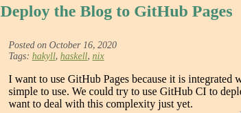
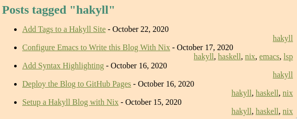
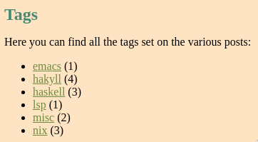

Let’s add some tags to each blog post. The tags are added in the header section of each post. For example:
---
title: Deploy the Blog to GitHub Pages
tags: hakyll, haskell, nix
---This will produce a blog post with 3 tags. Clicking on a tag will bring you to a page with all blog posts tagged with that tag.
You can also access to all tags from a special Tags page.
Let’s set this all up. Everything outlined here can be found in this commit.
I was heavily inspired by this blog post by Javran but I diverged in the way I wanted the tags to be shown. I also added a Tags page.
Show Tags in Post
First, let’s show the tags on each post page. This will be the result:

We first need to add a section to templates/post.html:
<section class="tags">
$if(tags)$
Tags: $tags$
$endif$
</section>Note that the $if()$ clause only checks if a field exists. So the Tags: line will be printed also if the $tags$ field is empty.
We then need to update site.hs to populate the $tags$ field:
main = hakyllWith conf $ do
-- [...]
+ tags <- buildTags "posts/*" (fromCapture "tags/*.html")
+ let postCtxWithTags = postCtx tags
-- [...]
match "posts/*" $ do
route $ setExtension "html"
compile
$ pandocCompiler
- >>= loadAndApplyTemplate "templates/post.html" postCtx
- >>= loadAndApplyTemplate "templates/default.html" postCtx
+ >>= loadAndApplyTemplate "templates/post.html" postCtxWithTags
+ >>= loadAndApplyTemplate "templates/default.html" postCtxWithTags
>>= relativizeUrls
-postCtx :: Context String
-postCtx = dateField "date" "%B %e, %Y" `mappend` defaultContext
+postCtx :: Tags -> Context String
+postCtx tags =
+ tagsField "tags" tags
+ `mappend` dateField "date" "%B %e, %Y"
+ `mappend` defaultContextThe match "posts/*" block existed already but we changed the postCtx to postCtxWithTags. Actually, we changed all occurrences of postCtx with postCtxWithTags. We also added a "tags" field in the postCtx function.
Let’s analyze two lines which took me some time to understand.
Build Tags
buildTags :: MonadMetadata m
=> Pattern
-> (String -> Identifier)
-> m TagsWe use it like so:
buildTags "posts/*" (fromCapture "tags/*.html")In this case, buildTags will parse each file in the posts/ directory and extract all tags in the header. We will later generate an HTML page per tag and that’s when the fromCapture function will be used.
fromCapture :: Pattern -> String -> IdentifierPattern is a simple glob pattern:
(toFilePath $ fromCapture "tags/*.html" "foo") == "tags/foo.html"Tags Field
tagsField :: String -> Tags -> Context aWe use it like so:
tagsField "tags" tagsThis adds a field named "tags" that can be accessed in the template as $tags$. Context a is what the template has access to.
Here, the default rendering for $tags$ (comma separated list of urls) suits us but we will see later how to make something custom.
Tag Page
Let’s create an HTML page per tag that will show all posts that has the tag. It will look like this:

We create a template for the tag page in templates/tag.html. Here, we can reuse the post-list.html template:
$partial("templates/post-list.html")$In templates/post-list.html, we added the tags div:
<ul>
$for(posts)$
<li>
<a href="$url$">$title$</a> - $date$
+ <div class="tags">$tags$</div>
</li>
$endfor$
</ul>With some accompanying css in css/default.css:
article .tags {
font-size: 1.4rem;
font-style: italic;
color: #555;
}
div.tags {
text-align: right;
}In site.hs, we add a new block to the main function which takes care of generating one HTML page per tag.
main = hakyllWith conf $ do
+ tagsRules tags $ \tag pattern -> do
+ let title = "Posts tagged \"" ++ tag ++ "\""
+ route idRoute
+ compile $ do
+ posts <- recentFirst =<< loadAll pattern
+ let ctx =
+ constField "title" title
+ `mappend` listField "posts" postCtxWithTags (return posts)
+ `mappend` defaultContext
+
+ makeItem ""
+ >>= loadAndApplyTemplate "templates/tag.html" ctx
+ >>= loadAndApplyTemplate "templates/default.html" ctx
+ >>= relativizeUrlsWhere tags is the variable we added earlier with the buildTags function.
Page with all Tags
Last piece of the puzzle, let’s add a page with all tags. Clicking on a tag will forward to the corresponding tag page, the ones we created above. It will look like this:

In site.hs, we add a new block:
main = hakyllWith conf $ do
+ create ["tags.html"] $ do
+ route idRoute
+ compile $ do
+ tags' <- tagsMetadata tags
+ let tagsCtx =
+ listField
+ "tags"
+ ( field "name" (return . tagName . itemBody)
+ <> field "url" (return . tagUrl . itemBody)
+ <> field "count" (return . show . tagCount . itemBody)
+ )
+ (sequence $ map makeItem $ tags')
+ `mappend` defaultContext
+
+ getResourceBody
+ >>= applyAsTemplate tagsCtx
+ >>= loadAndApplyTemplate "templates/default.html" tagsCtx
+ >>= relativizeUrls
+
+data TagMetadata = TagMetadata
+ { tagName :: String
+ , tagUrl :: String
+ , tagCount :: Int
+ }
+
+tagsMetadata :: Tags -> Compiler [TagMetadata]
+tagsMetadata tags = do
+ let tagsList = map fst $ tagsMap tags
+ forM (tagsMap tags) $ \(tag, ids) -> do
+ route' <- getRoute $ tagsMakeId tags tag
+ return $ TagMetadata tag (fromMaybe "/" route') (length ids)There is a lot going on here, let’s analyze it step by step.
Tags.html Page
The create function will create the tags.html page. The getResourceBody will load a template html page of the same name. Let’s create it:
---
title: Tags
---
Here you can find all the tags set on the various posts:
<ul>
$for(tags)$
<li>
<a href="$url$">$name$</a> ($count$)
</li>
$endfor$
</ul>It needs a $tags$ list whose items contain three fields: the $url$ of the tag page, the $name$ of the tag and how many posts are tagged with it in $count$.
Tags Metadata
The tagsMetadata function creates a list of TagMetadata out of the Tags. I copied it from the renderTags source code and only added the use of TagMetadata.
TagMetadata is a helper type I introduced to make passing data to the template’s context explicit.
Tags Context
tagsCtx is a Context having a $tags$ field which is a list. Each item has the $url$, $name$ and $count$ fields which are needed by the template. Those fields come from the TagMetadata type.
Tags Nav
Finally, we can add a link to the /tags.html page to the nav bar in the templates/default.html file:
<a href="/contact.html">Contact</a>
+ <a href="/tags.html">Tags</a>
<a href="/archive.html">Archive</a>Conclusion
Although that was not straightforward and I ran into a lot of issues while figuring things out, once more Haskell shines because most of the issues were resolved at compile time. The only things I needed to figure out at runtime were related to styling and cosmetics.